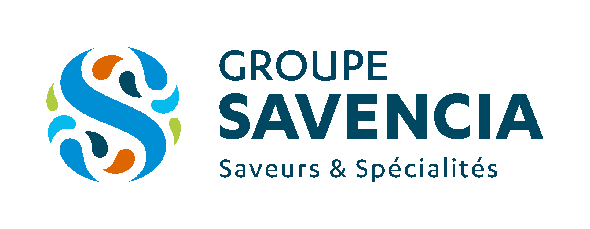

Savencia est un groupe alimentaire international, familial et indépendant, animé par des valeurs fortes et une vocation : « Entreprendre pour bien nourrir l’Homme ». Savencia crée des produits innovants et de haute qualité, commercialisés en grande distribution et en Food Service. Son organisation s’appuie sur des filiales en forte proximité avec leurs marchés locaux, ainsi que sur des expertises globales partagées.
Au sein de ce groupe international j'ai eu la chance de rejoindre le service support de proximité.
Webitech est une école d’informatique, spécialisée dans le digital à Paris. Elle propose des formations en BTS, bachelor et mastere, disponibles en alternance et en initiale, reconnues par l'état.
Ces programmes de formation sont spécialisés en développement informatique, IT, big data, SI, devOps, Cloud, intelligence artificielle, programmation informatique. L’enseignement est orienté vers le web et les nouvelles technologies afin de préparer les apprenants à une carrière dans l’informatique.